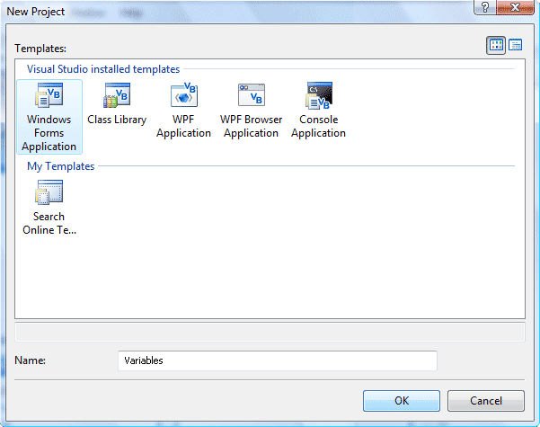
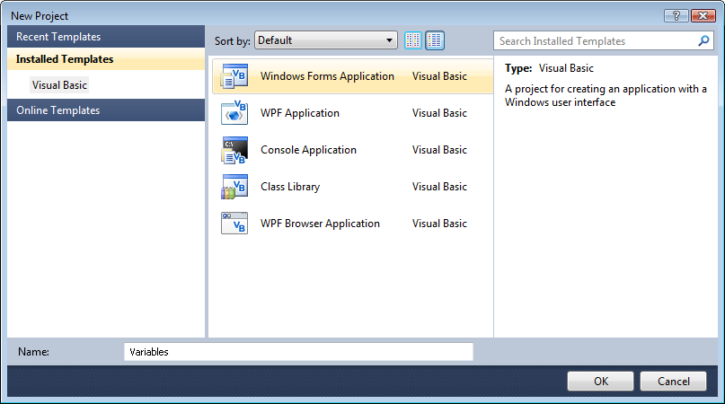
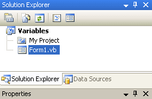

Creating a New Project
Time to get our hands dirty with a bit of programming. There's no putting it off any longer, I'm afraid! We'll create a new project for the next section.
So, if you already have you VB NET software open, you can get rid of the current
project by clicking File from the menu bar. From the drop down menu,
choose Close Project (Close Solution in Visual Studio 2012). You will
be returned to the Start Page. Click File > New Project from the menu
bars. When you get the dialogue box popping up, choose Windows Forms Application
at the top. Then change the Name from WindowsApplication to Variables:
Version 2008

Version 2010/2012

When you click the OK button, a new form will appear.
If you look at the Solution Explorer at the top, you'll see the name of the
project has changed to the Name you gave it.

The name of the Project is now Variables - the same name as the folder that is created for you to hold all your project files.
Now that you have a new Project started, we can discuss Variables. We'll do that in the next section.